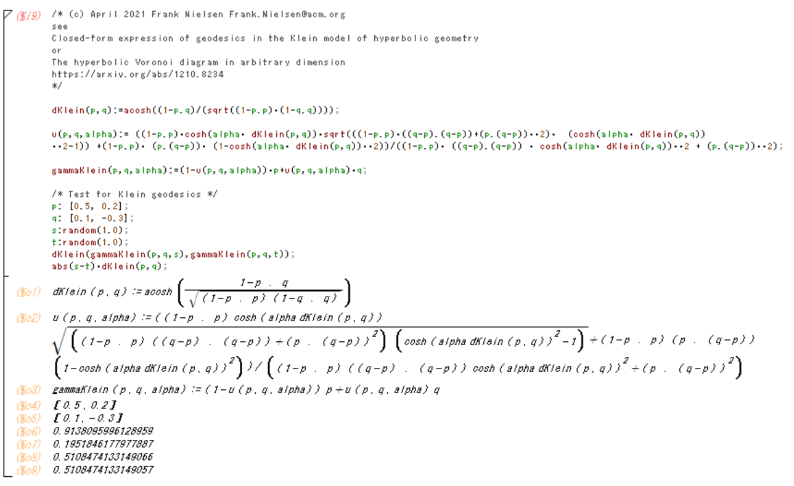
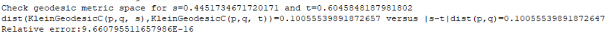

<h1>Klein geodesics: Closed form formula</h1>

<center>

</center>

<ul>

<li><A HREF="ClosedFormKleinGeodesics.pdf" 
target="_blank">Closed-form expression of geodesics in the Klein model of hyperbolic geometry</A>.
 See <A HREF="https://arxiv.org/abs/1210.8234" 
target="_blank">The hyperbolic Voronoi diagram in arbitrary dimension</A> (arXiv:1210.8234)

<li>Demo <A HREF="KleinGeodesics-demo-maxima.txt" 
target="_blank">code KleinGeodesics-demo-maxima.txt</A> in <A HREF="https://maxima.sourceforge.io/" target="_blank">Maxima</A> (computer algebra system, symbolic calculation)
<BR>
<center>

</center>

<li>Demo <A HREF="SimpleKleinGeodesic.java" 
target="_blank">code SimpleKleinGeodesic.java</A> in Java

<center>

</center>


</ul>

<center>
<iframe width="560" height="315" src="https://www.youtube.com/embed/K_mN4gpYmt8" title="YouTube video player" frameborder="0" allow="accelerometer; autoplay; clipboard-write; encrypted-media; gyroscope; picture-in-picture" allowfullscreen></iframe>
</center>
<A HREF="ConstantSpeed-KleinGeodesics.avi" 
target="_blank">ConstantSpeed-KleinGeodesics.avi</A>
<A HREF="ConstantSpeedKleinGeodesics.mp4" 
target="_blank">ConstantSpeedKleinGeodesics.mp4</A>


<HR>
(C) 2021 Frank Nielsen